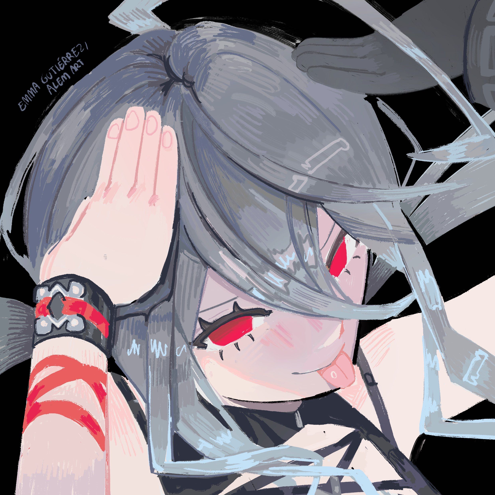

About Me

My name is Taj Hong, although Frosty is usually the name I go by online. The image above is the profile
picture I use on basically all of my personal accounts. I'm a big gamer and currently in college for my
Associate of Applied Science for Software Development. I also have a job, but I'm not telling you what
that is here because unless you work with me, I don't want you coming to my place of work and getting
me fired.
The skills I've learned over the years mostly involve computers and coding, as I taught myself
how to code a few different things for games, while also learning how to code from school. I'm also a pretty
fast learner at basically everything, which allows me to be good at almost any game I play. If you want to
learn more, go to my Skills page.
My interests and hobbies are almost exclusively gaming related. I play a wide variety of games ranging
from very relaxing games that allow me to chill and do nothing, all the way to the side of extremely stressful
games that force me to focus and be locked in. If you wanna know more about everything that I'm into, then go
to my Skills page.
(Also if you wanna see the friend that made my pfp then go here.)